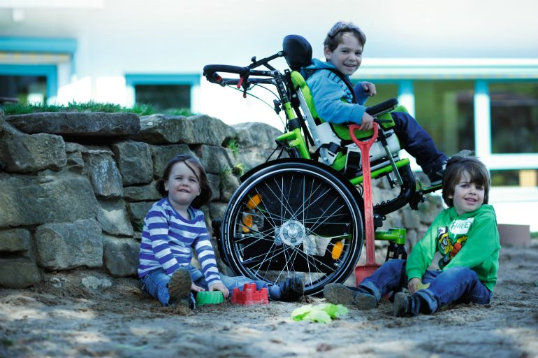

ChildLink of Las Cruces
A Loving Connection between Children with Disabilities and the Resources They Need

Temporary Financial Assistance Available
To be eligible for this program, you must meet the following criteria:
- Your child must have been diagnosed with a physical or mental disability within the last 6 months (the diagnosis can be prenatal or at any age)
- Your family must be at or below the State of New Mexico's poverty line
To apply, please complete the following steps:
- Pick up an application from ChildLink (address below)
- Assemble the following documents:
- Your completed application
- Doctor's record of your child's diagnosis
- Tax records or New Mexico Social Services certificate of your income level
- Your lease, mortgage, or medical bills, depending on which you need help with
- Make an appointment with a ChildLink volunteer, available at the following times:
- Ida: MW 10:30 a.m. to 3:30 p.m.
- Juan: TR 9:00 a.m. to noon
- Chris: F 10:30 a.m. to 3:30 p.m.